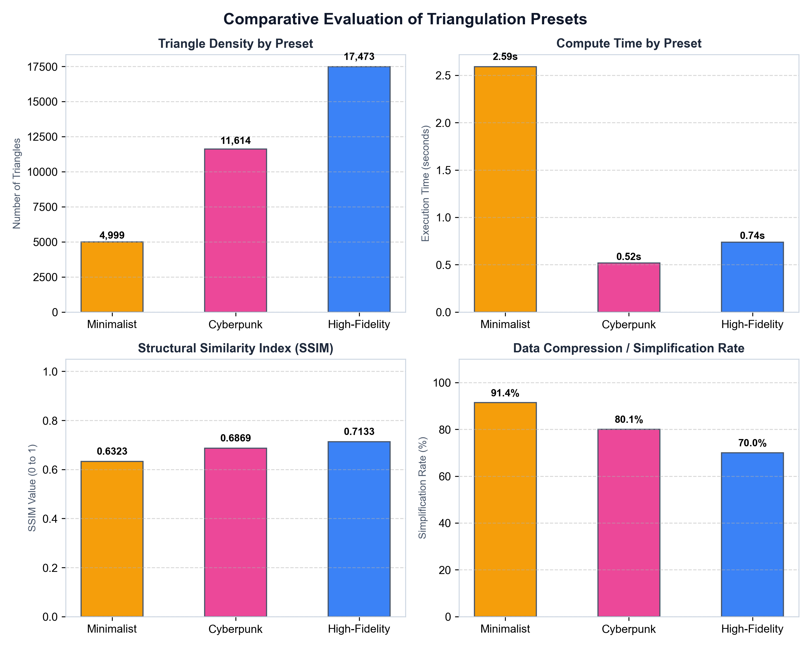
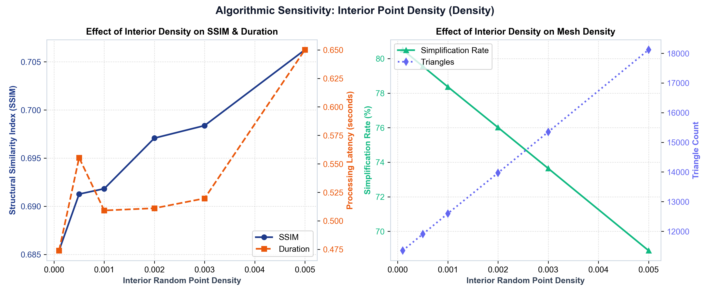
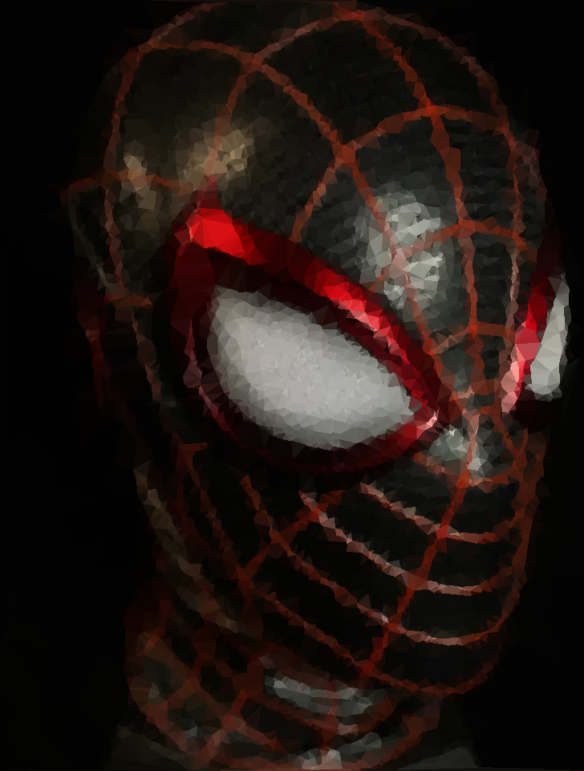

The Delaunay algorithmic pipeline isn't just for creating beautiful art. It solves real-world spatial computing and data compression challenges across multiple industries.
Modern web applications rely heavily on high-resolution imagery. Loading these over slow mobile connections causes jarring layout shifts (CLS) and poor user experience.
By passing images through the Delaunay compressor, a 3 MB raster image can be converted into a lightweight 12 KB vector JSON payload. This is instantly rendered via WebGL as a blurred, geometric placeholder while the heavy bitmap loads in the background.

Indie game developers often lack the resources to hand-paint hundreds of background assets or terrain topologies. Our automated parameter sweeps allow developers to instantly stylize normal photographs into game-ready, low-poly aesthetics.
Using the Saliency-Driven adaptive mesh, the algorithm automatically allocates more polygons to highly detailed subjects (like characters or foreground objects) and fewer to empty skies, generating optimized collision meshes and rendering geometry.

Graphic designers spend hours manually placing polygons in Illustrator to create "Cyberpunk" or "Minimalist" triangulated art. Our O(1) Integral Image optimized pipeline does this in milliseconds.
The system exports directly to scalable vector formats (SVG), allowing the artwork to be printed at massive billboard sizes without any pixelation or quality loss.
